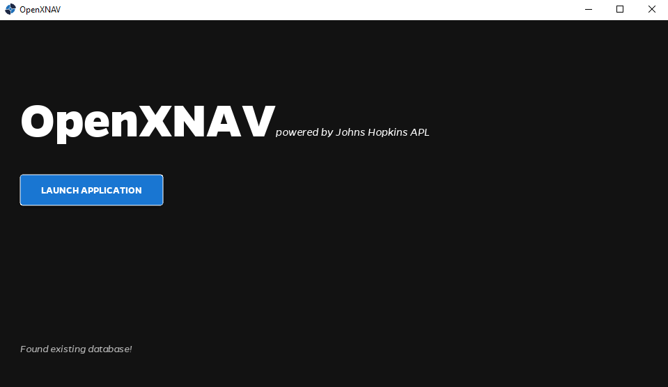
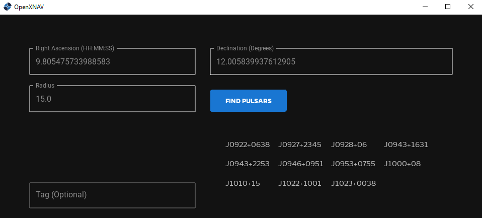
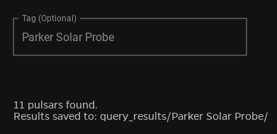

Pulsar Querying
Installation
Before using the OpenXNAV Pulsar Querying Tool, you will need to install the necessary python packages. You can do this using your preferred python package manager, but instructions are provided below for using Anaconda
Inside the open-xnav/1__pulsar_querying/ directory, there is an environment.yml file. This file can be passed to your preferred package manager to create a new environment that can run the tool.
Create New Environment
The default environment name in environment.yml is openXNAV-gui. If you wish to change the environment name, simply edit environment.yml before creating the environment.
Open your Anaconda Prompt (or activate Anaconda in a terminal window). Navigate to open-xnav/`1__pulsar_querying/ and run the following command:
To activate your environment, run the following command:
NOTE: If you altered the environment name, you will need to alter the above command to reflect that new name.Install KivyMD
The tool also depends on KivyMD, which is a library built off of the popular Kivy library. This package is not available through conda, so you must install it using pip.
First, make sure you have activated the openXNAV-gui environment in your terminal. Then, run the following command:
If you are getting a ReadTimeoutError response during installation, you might be using a VPN or have a slower internet connection. If this happens, try running the following instead:
If that still does not work, you can troubleshoot your issues further using the pip documentation here.
Using The Tool
Load/Generate Database
Once you have successfully installed all the required packages, you are ready to run the tool!
First, ensure you have navigated to open-xnav/1__pulsar_querying/ in your terminal and have your openXNAV-gui environment activated.
Then, simply run the following in your terminal:
Upon startup, the tool will need to pull the current ATNF Pulsar Catalogue from the web. This process only need to be done the first time you open the application.
However, if you wish to update the database, simply delete the .../pulsar_database/ directory from your file system. Then, relaunch the application. Once the database has been generated, you can continue begin querying.
You should see the OpenXNAV launch window with the blue Launch Application button active. In the future, when you open the application, the tool will locate the previously-generated database and you can quickly continue to the querying functionality.

Query For Pulsars
After you click Launch Application, the query tool will display.

There are three fields that you need to provide to execute a query:
- Right Ascension (HH:MM:SS)
- Declination (DD:MM:SS)
- Search Radius (Degrees)
These values will create a query, searching for all known pulsars that are within a given search radius of the provided coordinates in space.
The OpenXNAV tool leverages the open-source psrqpy library. More information about this package, and how queries are executed, can be found here.
The query results will display to the GUI interface, and will also be stored in a sub-directory within .../query_results/.

For information about how these sub-directories are tagged, see below.
Tagging Results
There is an optional Tag field that OpenXNAV also provides. This allows you to specify the tag for this query you are about to execute. If a tag is provided, that will be used to name the sub-directory within .../query_results/ where all pulsars returned by the query are stored.

Sample Queries
Below are couple sample queries that you can run to get familiar with the OpenXNAV tool. There are additional sample query results contained in the .../query_results/ directory.
| Query | Right Ascension | Declination | Radius |
|---|---|---|---|
| Parker Solar Probe | 9.805475733988583 | 12.005839937612905 | 15.0 |
| L2 | 18:24:32.00819 | -24:52:10.720 | 30.0 |
Output Files
STK Integration
Right now, the OpenXNAV Pulsar Querying Tool only outputs pulsar data into the .st format. This is the format that is required by STK to perform subsequent mission planning.
To display the format of this file, here is J00012_5431.st as an example:
stk.v.12.0
WrittenBy OpenXNAV
BEGIN Star
Name J0012_5431
BEGIN PathDescription
Epoch 58912.0
RefFrame J2000
RightAscension 3.097083333333333
Declination +54:31:47
ProperMotionRAPerYr 0
ProperMotionDecPerYr 0
Parallax 0
RadialVelocity 0.0000000000000000e+00
END PathDescription
BEGIN PhysicalData
Magnitude None
END PhysicalData
BEGIN IdentityData
Id 0
END IdentityData
BEGIN Extensions
BEGIN ExternData
END ExternData
BEGIN ADFFileData
END ADFFileData
BEGIN AccessConstraints
LineOfSight IncludeIntervals
UsePreferredMaxStep No
PreferredMaxStep 360
END AccessConstraints
BEGIN Desc
END Desc
BEGIN Crdn
END Crdn
BEGIN Graphics
BEGIN Attributes
MarkerColor #00ff00
LabelColor #00ff00
MarkerStyle 2
FontStyle 0
END Attributes
BEGIN Graphics
Show On
Inherit On
ShowLabel On
ShowMarker On
END Graphics
END Graphics
BEGIN VO
END VO
END Extensions
END Star
You will need to provide these .st file(s) to STK to successfully execute OpenXNAV's mission planning functionality.
Other File Formats
However, if you would like pulsar information to be stored/saved in a different format, you can modify the source code.
Navigate to queryPulsar.py and locate the following function:
.../query_results/.